Why a fresh transformation, not vibes-transformation. The legacy vibes-transformation module (not in the root pom) is an I/O / format-conversion layer for the obsolete be.unamur.transitionsystem.* namespace; it does not contain anything for pair-graph / k-tuple coverage transformation. We re-implement directly against the current be.vibes.ts.* types.
Reduction: pair-coverage on FTS F ≡ edge-coverage on the pair graph P(F). A Hierholzer cycle on P(F) covers every original pair.
FExpressionPreservingProjection.project.InitialSccFilter.keepInitialScc.PairGraphTransformer.transform — nodes = original transitions plus INIT; edges = INIT→p(t) for initial-state outgoings and p(t1)→p(t2) for every contiguous pair.EulerianBalancer.balanceWithoutPrecheck — supplies the missing INIT-incoming as synthetic __balance__N edges.p(t1)→p(t2) translates to executing t2 in the original FTS. The first edge of each non-INIT segment gets t_Y prepended to preserve the otherwise-split pair.Coverage claim: Hierholzer visits every pair-graph edge exactly once → every contiguous original transition pair is covered, by construction.
Three FTS images per product: (a) the repaired original FTS — source of the pair info; (b) the pair graph BEFORE balancing — INIT source-only and the graph is not Eulerian; (c) the pair graph AFTER balancing — synthetic __balance__N edges to INIT shown dashed-red. Generated test cases are listed underneath.
Selected features: selected = {e, s}
Repaired FTS: 6 states, 12 transitions (11 real / 1 __end__).
Pair graph (raw): 13 nodes (incl. INIT), 31 edges.
Pair graph (balanced): 13 nodes, 46 edges (15 synthetic __balance__N added).
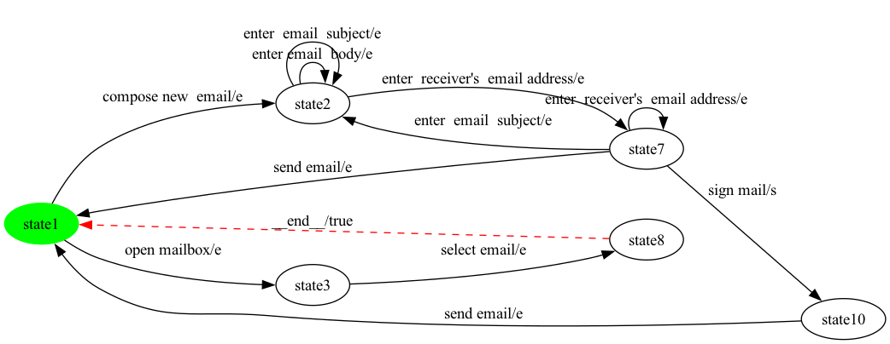
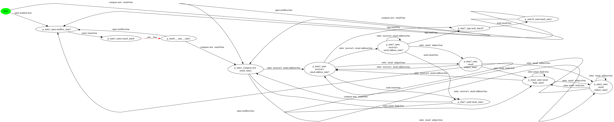
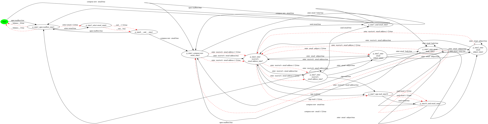
Generated test suite — 10 test case(s) total (38 real step(s); pair-graph cycle has 46 edge(s) total, 15 synthetic dropped at translation).
compose new email → enter email subject → enter email subject → enter email bodysend emailopen mailbox → select emailopen mailboxcompose new email → enter email body → enter receiver's email address → sign mail → send emailcompose new email → enter receiver's email addressenter receiver's email address → send emailcompose new emailenter receiver's email address → sign mailenter receiver's email address → enter receiver's email address → enter receiver's email address → enter email subject → enter email subjectenter receiver's email address → enter email subject → enter receiver's email addressenter email subject → enter email body → enter email body → enter email subject → enter receiver's email address → send emailopen mailboxopen mailboxSelected features: selected = {ad, e}
Repaired FTS: 8 states, 15 transitions (14 real / 1 __end__).
Pair graph (raw): 16 nodes (incl. INIT), 40 edges.
Pair graph (balanced): 16 nodes, 72 edges (32 synthetic __balance__N added).
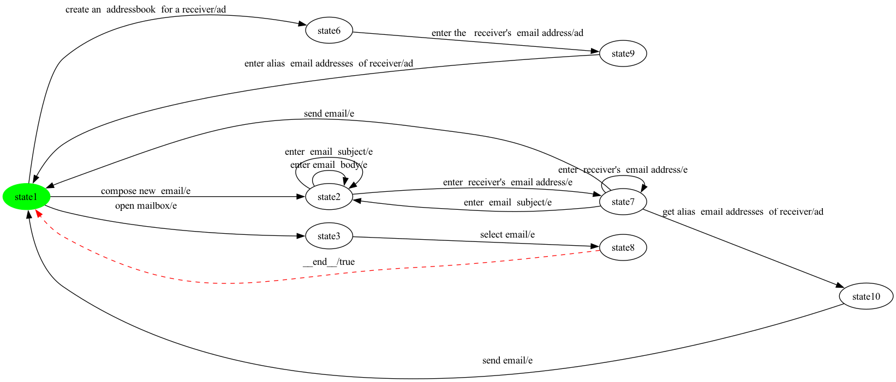
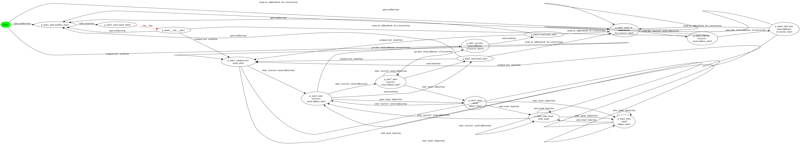
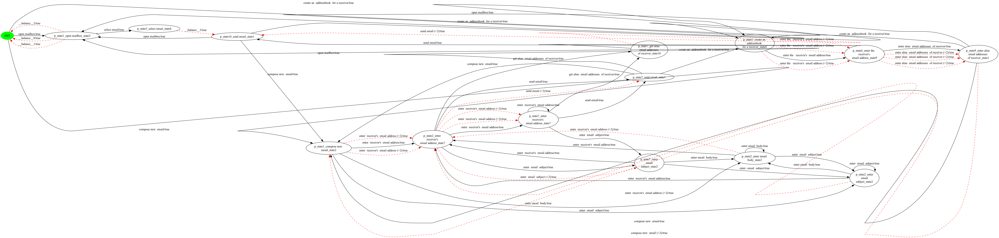
Generated test suite — 21 test case(s) total (57 real step(s); pair-graph cycle has 72 edge(s) total, 32 synthetic dropped at translation).
compose new email → enter email subject → enter email subject → enter email bodyenter receiver's email address → get alias email addresses of receiversend emailcreate an addressbook for a receiverenter alias email addresses of receivercreate an addressbook for a receiverenter alias email addresses of receivercompose new email → enter email body → enter receiver's email addresssend emailopen mailbox → select emailopen mailboxcompose new emailenter receiver's email address → send emailcompose new emailenter receiver's email address → get alias email addresses of receiver → send emailcompose new emailenter receiver's email address → enter receiver's email address → enter receiver's email address → enter email subject → enter email subjectenter receiver's email address → send emailcreate an addressbook for a receiverenter the receiver's email address → enter alias email addresses of receivercompose new email → enter receiver's email addresssend emailopen mailboxcreate an addressbook for a receiverenter receiver's email address → enter email subject → enter receiver's email addressenter email subject → enter email body → enter email body → enter email subject → enter receiver's email addressopen mailboxcreate an addressbook for a receiver → enter the receiver's email addressenter alias email addresses of receiveropen mailboxSelected features: selected = {ad, au, e}
Repaired FTS: 10 states, 20 transitions (18 real / 2 __end__).
Pair graph (raw): 21 nodes (incl. INIT), 61 edges.
Pair graph (balanced): 21 nodes, 148 edges (87 synthetic __balance__N added).

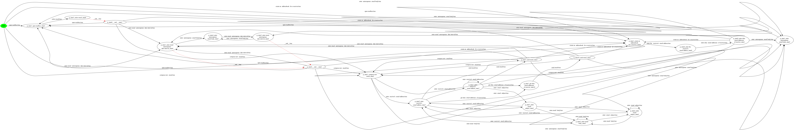
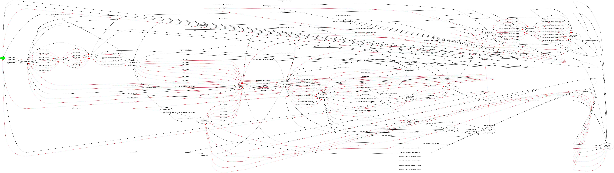
Generated test suite — 35 test case(s) total (88 real step(s); pair-graph cycle has 148 edge(s) total, 87 synthetic dropped at translation).
enter email autoresponse date intervalopen mailbox → select emailcreate an addressbook for a receivercompose new email → enter email body → enter email subject → enter email subject → enter receiver's email addresssend emailenter autoresponse email bodyenter email autoresponse date intervalopen mailboxenter email autoresponse date intervalenter alias email addresses of receivercompose new email → enter email subject → enter email body → enter receiver's email address → get alias email addresses of receiversend emailcreate an addressbook for a receiversend emailopen mailboxenter autoresponse email bodycreate an addressbook for a receiverget alias email addresses of receiver → send emailcompose new emailenter receiver's email address → send emailenter autoresponse email bodyenter alias email addresses of receiverenter email autoresponse date intervalsend emailcompose new emailsend emailcreate an addressbook for a receiver → enter the receiver's email addressenter alias email addresses of receiveropen mailboxcompose new emailsend emailenter email autoresponse date intervalcompose new email → enter receiver's email address → enter email subject → enter email body → enter email bodyenter autoresponse email body → enter email autoresponse date intervalenter email subject → enter email subjectcompose new emailenter receiver's email address → enter receiver's email address → send emailopen mailboxopen mailboxcreate an addressbook for a receiverenter alias email addresses of receivercreate an addressbook for a receiverenter the receiver's email address → enter alias email addresses of receiverenter autoresponse email bodycompose new emailenter receiver's email address → enter email subject → enter receiver's email address → enter receiver's email address → get alias email addresses of receiversend emailenter email autoresponse date interval → enter autoresponse email body → enter email autoresponse date intervalenter autoresponse email bodyenter email autoresponse date interval → enter autoresponse email bodySelected features: selected = {ad, au, e, en, s}
Repaired FTS: 11 states, 23 transitions (21 real / 2 __end__).
Pair graph (raw): 24 nodes (incl. INIT), 68 edges.
Pair graph (balanced): 24 nodes, 162 edges (94 synthetic __balance__N added).

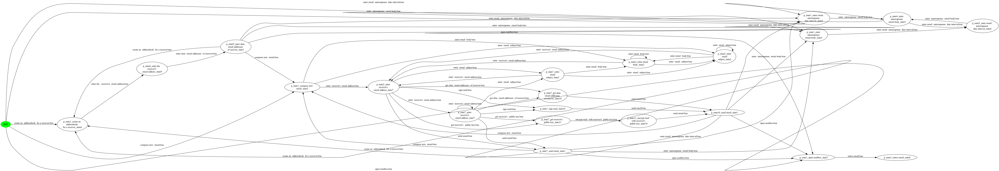

Generated test suite — 39 test case(s) total (99 real step(s); pair-graph cycle has 162 edge(s) total, 94 synthetic dropped at translation).
enter email autoresponse date intervalopen mailbox → select emailopen mailboxcreate an addressbook for a receivercompose new email → enter email body → enter email subject → enter email subjectenter receiver's email address → sign mail → send emailenter autoresponse email bodyopen mailboxenter email autoresponse date intervalenter autoresponse email body → enter email autoresponse date intervalenter email autoresponse date intervalcompose new email → enter email subject → enter receiver's email address → get alias email addresses of receiver → send emailcreate an addressbook for a receiverenter alias email addresses of receivercompose new emailenter receiver's email address → send emailenter autoresponse email bodycreate an addressbook for a receiverenter alias email addresses of receiverenter email autoresponse date intervalsend emailcompose new emailsend emailcreate an addressbook for a receiverenter alias email addresses of receiveropen mailboxsend emailenter email autoresponse date intervalsend emailopen mailboxcompose new emailenter receiver's email address → enter email subject → enter email body → enter receiver's email addressenter email subject → enter email subject → enter email body → enter email bodyenter autoresponse email bodycompose new email → enter receiver's email addressenter receiver's email address → sign mailsend emailopen mailboxenter receiver's email address → get receiver's public key → encrypt mail with receiver's public key → send emailcompose new emailenter receiver's email address → enter receiver's email address → send emailopen mailboxcreate an addressbook for a receiver → enter the receiver's email address → enter alias email addresses of receivercreate an addressbook for a receiverenter alias email addresses of receiverenter autoresponse email bodyenter receiver's email address → enter receiver's email address → get alias email addresses of receiversend emailcompose new emailenter receiver's email address → enter email subject → enter receiver's email address → get receiver's public keysend emailenter email autoresponse date interval → enter autoresponse email body → enter email autoresponse date intervalenter autoresponse email bodyenter email autoresponse date interval → enter autoresponse email bodySelected features: selected = {e, en, s}
Repaired FTS: 7 states, 14 transitions (13 real / 1 __end__).
Pair graph (raw): 15 nodes (incl. INIT), 35 edges.
Pair graph (balanced): 15 nodes, 59 edges (24 synthetic __balance__N added).
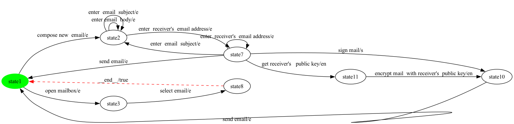
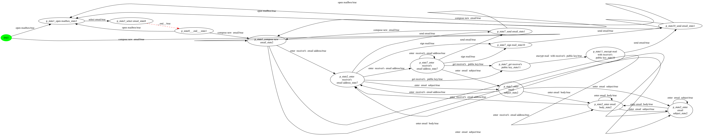
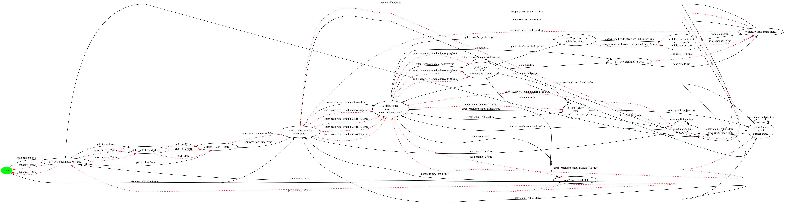
Generated test suite — 15 test case(s) total (47 real step(s); pair-graph cycle has 59 edge(s) total, 24 synthetic dropped at translation).
compose new email → enter email subject → enter email subject → enter email bodyenter receiver's email address → sign mail → send emailopen mailbox → select emailopen mailboxcompose new email → enter email body → enter receiver's email addressenter receiver's email address → send emailcompose new emailenter receiver's email address → sign mailsend emailcompose new email → enter receiver's email addressenter receiver's email address → get receiver's public key → encrypt mail with receiver's public key → send emailenter receiver's email address → enter receiver's email address → enter receiver's email address → enter email subject → enter email subjectenter receiver's email address → get receiver's public keyenter receiver's email address → send emailopen mailboxcompose new emailenter receiver's email address → enter email subject → enter receiver's email addressenter email subject → enter email body → enter email body → enter email subject → enter receiver's email addressopen mailboxSelected features: selected = {au, e, en, s}
Repaired FTS: 9 states, 19 transitions (17 real / 2 __end__).
Pair graph (raw): 20 nodes (incl. INIT), 53 edges.
Pair graph (balanced): 20 nodes, 110 edges (57 synthetic __balance__N added).
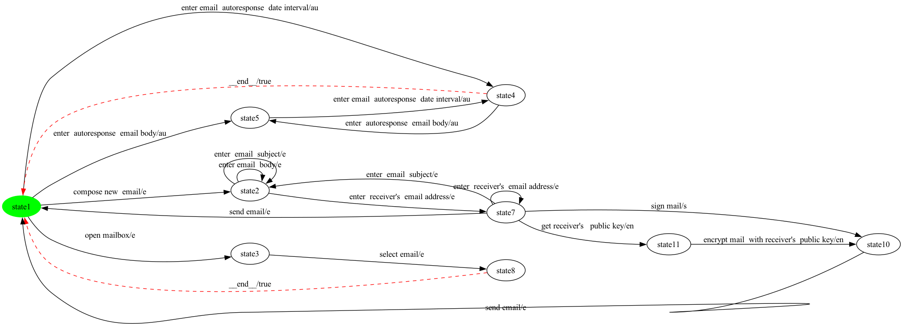
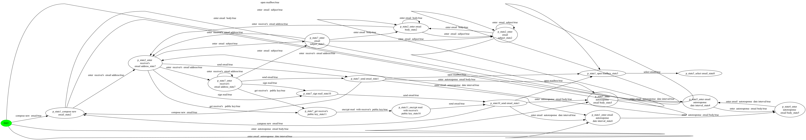
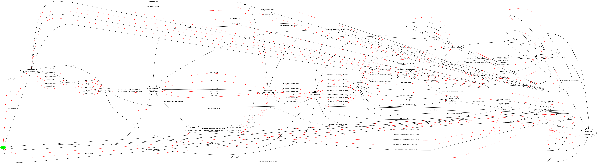
Generated test suite — 28 test case(s) total (74 real step(s); pair-graph cycle has 110 edge(s) total, 57 synthetic dropped at translation).
enter email autoresponse date intervalopen mailbox → select emailenter email autoresponse date intervalopen mailboxenter email autoresponse date intervalcompose new email → enter email body → enter email subject → enter email subjectsend emailenter autoresponse email bodycompose new email → enter email subject → enter receiver's email address → sign mail → send emailopen mailboxenter autoresponse email bodyenter receiver's email address → send emailenter autoresponse email body → enter email autoresponse date intervalsend emailcompose new email → enter receiver's email addresssend emailenter email autoresponse date intervalcompose new emailsend emailopen mailboxenter receiver's email address → enter email subject → enter email body → enter receiver's email addressenter email subject → enter email subject → enter email body → enter email bodyenter autoresponse email bodyenter receiver's email address → sign mailcompose new emailenter receiver's email address → get receiver's public key → encrypt mail with receiver's public keysend emailcompose new emailenter receiver's email address → enter receiver's email address → enter receiver's email address → send emailcompose new emailenter receiver's email address → enter email subject → enter receiver's email address → get receiver's public keyencrypt mail with receiver's public key → send emailenter email autoresponse date interval → enter autoresponse email body → enter email autoresponse date intervalenter autoresponse email bodyenter email autoresponse date interval → enter autoresponse email bodyopen mailboxSelected features: selected = {ad, au, e, f, s}
Repaired FTS: 10 states, 22 transitions (20 real / 2 __end__).
Pair graph (raw): 23 nodes (incl. INIT), 66 edges.
Pair graph (balanced): 23 nodes, 161 edges (95 synthetic __balance__N added).
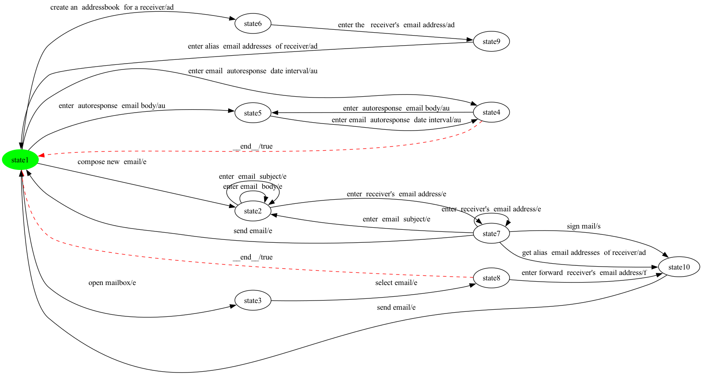
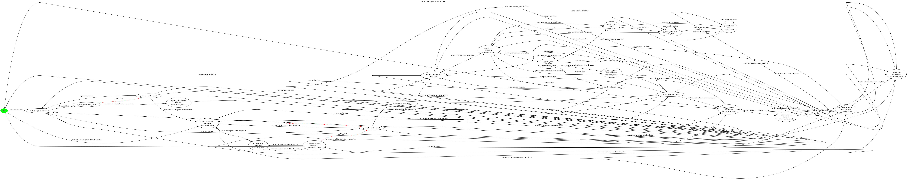
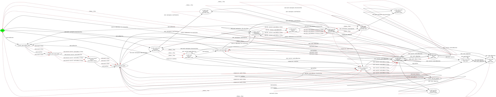
Generated test suite — 38 test case(s) total (96 real step(s); pair-graph cycle has 161 edge(s) total, 95 synthetic dropped at translation).
enter email autoresponse date intervalopen mailbox → select emailenter forward receiver's email address → send emailenter autoresponse email bodysend emailcreate an addressbook for a receivercompose new email → enter email body → enter email subject → enter email subjectenter receiver's email address → sign mail → send emailopen mailboxselect email → enter forward receiver's email addressopen mailboxcreate an addressbook for a receiverenter alias email addresses of receivercompose new email → enter email subject → enter receiver's email address → get alias email addresses of receiversend emailcompose new emailenter receiver's email address → send emailenter autoresponse email body → enter email autoresponse date intervalenter email autoresponse date intervalopen mailboxenter autoresponse email bodyenter email autoresponse date intervalsend emailcompose new emailsend emailcreate an addressbook for a receiversend emailenter email autoresponse date intervalcreate an addressbook for a receiverenter alias email addresses of receiverenter email autoresponse date intervalenter alias email addresses of receiveropen mailboxcompose new emailsend emailopen mailboxcompose new email → enter receiver's email address → enter email subject → enter email body → enter receiver's email addressenter email subject → enter email subject → enter email body → enter email bodyenter autoresponse email bodyenter receiver's email address → sign mailcompose new emailenter receiver's email address → enter receiver's email address → send emailopen mailboxcreate an addressbook for a receiverenter the receiver's email address → enter alias email addresses of receivercreate an addressbook for a receiver → enter the receiver's email addressenter alias email addresses of receiverenter autoresponse email bodycompose new emailenter receiver's email address → enter email subject → enter receiver's email address → enter receiver's email address → get alias email addresses of receiver → send emailenter email autoresponse date interval → enter autoresponse email body → enter email autoresponse date intervalenter autoresponse email bodyenter email autoresponse date interval → enter autoresponse email bodySelected features: selected = {e, f, s}
Repaired FTS: 6 states, 13 transitions (12 real / 1 __end__).
Pair graph (raw): 14 nodes (incl. INIT), 33 edges.
Pair graph (balanced): 14 nodes, 49 edges (16 synthetic __balance__N added).

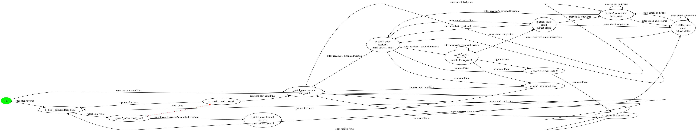
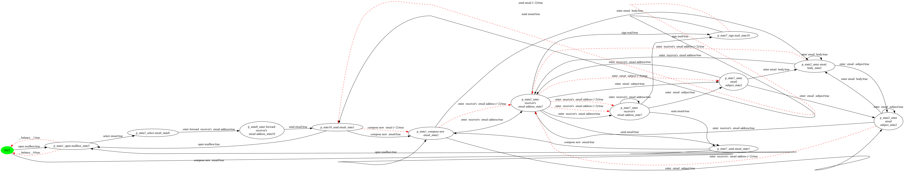
Generated test suite — 13 test case(s) total (43 real step(s); pair-graph cycle has 49 edge(s) total, 16 synthetic dropped at translation).
compose new email → enter email subject → enter email subject → enter email bodyenter receiver's email address → sign mail → send emailopen mailbox → select emailopen mailboxcompose new email → enter email body → enter receiver's email addressenter receiver's email address → send emailcompose new email → enter receiver's email addressenter receiver's email address → sign mailsend emailcompose new emailenter receiver's email address → enter receiver's email address → enter receiver's email address → enter email subject → enter email subjectenter receiver's email address → send emailopen mailboxselect email → enter forward receiver's email address → send emailenter receiver's email address → enter email subject → enter receiver's email addressenter email subject → enter email body → enter email body → enter email subject → enter receiver's email addressopen mailboxSelected features: selected = {au, e}
Repaired FTS: 7 states, 15 transitions (13 real / 2 __end__).
Pair graph (raw): 16 nodes (incl. INIT), 42 edges.
Pair graph (balanced): 16 nodes, 76 edges (34 synthetic __balance__N added).

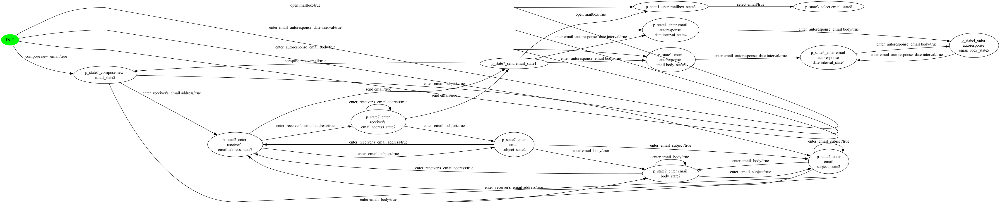
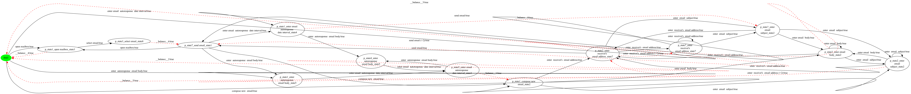
Generated test suite — 19 test case(s) total (54 real step(s); pair-graph cycle has 76 edge(s) total, 34 synthetic dropped at translation).
enter email autoresponse date intervalenter autoresponse email body → enter email autoresponse date intervalopen mailbox → select emailopen mailboxcompose new email → enter email subject → enter email subject → enter email body → enter receiver's email addressenter receiver's email address → send emailenter email autoresponse date intervalenter email autoresponse date intervalcompose new email → enter email body → enter email body → enter email subjectenter receiver's email address → enter receiver's email address → enter receiver's email address → enter email subject → enter email subject → enter receiver's email address → send emailenter autoresponse email bodysend emailcompose new email → enter receiver's email addresscompose new emailsend emailopen mailboxopen mailboxenter autoresponse email bodyenter email autoresponse date interval → enter autoresponse email body → enter email autoresponse date intervalenter autoresponse email bodyenter email autoresponse date interval → enter autoresponse email bodyenter receiver's email address → enter email subject → enter receiver's email addressenter email subject → enter email bodySelected features: selected = {ad, e, f}
Repaired FTS: 8 states, 16 transitions (15 real / 1 __end__).
Pair graph (raw): 17 nodes (incl. INIT), 42 edges.
Pair graph (balanced): 17 nodes, 76 edges (34 synthetic __balance__N added).

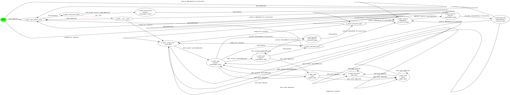
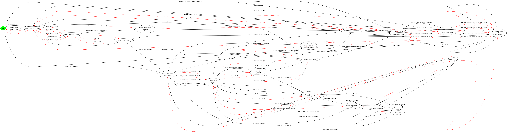
Generated test suite — 23 test case(s) total (61 real step(s); pair-graph cycle has 76 edge(s) total, 34 synthetic dropped at translation).
compose new email → enter email subject → enter email subject → enter email bodyenter receiver's email address → get alias email addresses of receiversend emailcreate an addressbook for a receiverenter alias email addresses of receivercreate an addressbook for a receiverenter alias email addresses of receivercompose new email → enter email body → enter receiver's email addressenter receiver's email address → send emailcompose new emailenter receiver's email address → get alias email addresses of receiver → send emailopen mailbox → select emailopen mailboxcompose new emailenter receiver's email address → enter receiver's email address → enter receiver's email address → enter email subject → enter email subjectenter receiver's email address → send emailcreate an addressbook for a receiverenter the receiver's email address → enter alias email addresses of receivercompose new email → enter receiver's email addresssend emailopen mailboxcreate an addressbook for a receiverenter forward receiver's email address → send emailselect email → enter forward receiver's email addresssend emailcompose new emailenter receiver's email address → enter email subject → enter receiver's email addressenter email subject → enter email body → enter email body → enter email subject → enter receiver's email addressopen mailboxcreate an addressbook for a receiver → enter the receiver's email addressenter alias email addresses of receiveropen mailboxSelected features: selected = {ad, au, e, f}
Repaired FTS: 10 states, 21 transitions (19 real / 2 __end__).
Pair graph (raw): 22 nodes (incl. INIT), 63 edges.
Pair graph (balanced): 22 nodes, 152 edges (89 synthetic __balance__N added).
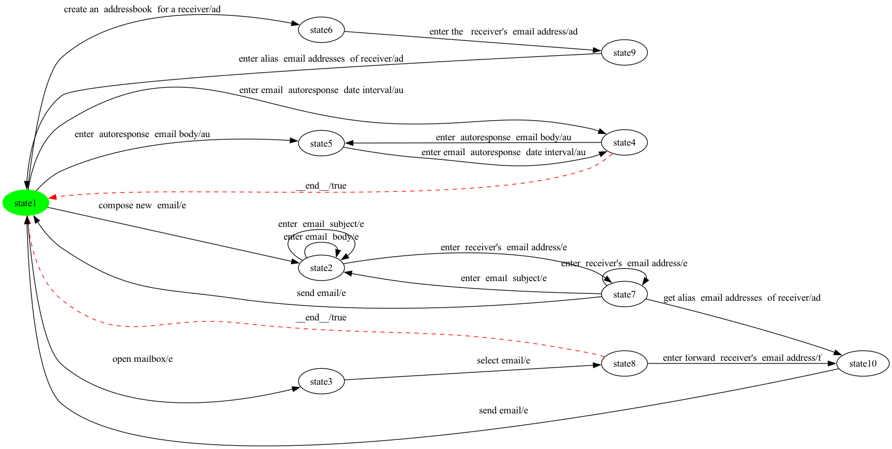
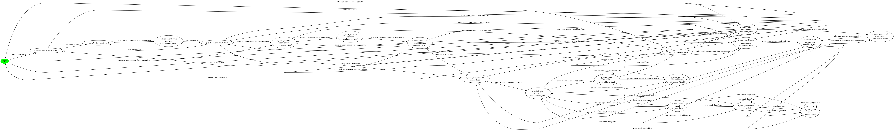
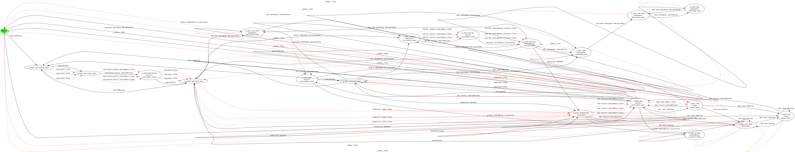
Generated test suite — 35 test case(s) total (90 real step(s); pair-graph cycle has 152 edge(s) total, 89 synthetic dropped at translation).
enter email autoresponse date intervalenter forward receiver's email address → send emailenter autoresponse email bodyopen mailbox → select email → enter forward receiver's email addresssend emailcreate an addressbook for a receivercompose new email → enter email body → enter email subject → enter email subject → enter receiver's email address → get alias email addresses of receiver → send emailopen mailboxsend emailcompose new email → enter email subject → enter email body → enter receiver's email address → send emailenter autoresponse email bodyopen mailboxcreate an addressbook for a receiverenter alias email addresses of receivercompose new emailsend emailcompose new emailsend emailcreate an addressbook for a receiversend emailenter email autoresponse date intervalenter email autoresponse date intervalopen mailboxenter autoresponse email bodyenter email autoresponse date intervalcompose new email → enter receiver's email address → enter email subject → enter email body → enter email bodyenter autoresponse email body → enter email autoresponse date intervalcreate an addressbook for a receiverenter alias email addresses of receiverenter email autoresponse date intervalcreate an addressbook for a receiver → enter the receiver's email addressenter alias email addresses of receiveropen mailboxcompose new emailenter email subject → enter email subjectcompose new emailenter receiver's email address → enter receiver's email address → send emailopen mailboxopen mailboxcreate an addressbook for a receiverenter alias email addresses of receivercreate an addressbook for a receiverenter the receiver's email address → enter alias email addresses of receiverenter autoresponse email bodycompose new emailenter receiver's email address → enter email subject → enter receiver's email address → enter receiver's email address → get alias email addresses of receiversend emailenter email autoresponse date interval → enter autoresponse email body → enter email autoresponse date intervalenter autoresponse email bodyenter email autoresponse date interval → enter autoresponse email bodySelected features: selected = {ad, e, en}
Repaired FTS: 9 states, 17 transitions (16 real / 1 __end__).
Pair graph (raw): 18 nodes (incl. INIT), 44 edges.
Pair graph (balanced): 18 nodes, 76 edges (32 synthetic __balance__N added).

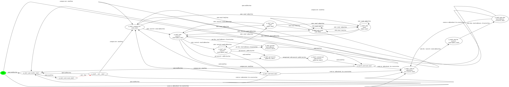
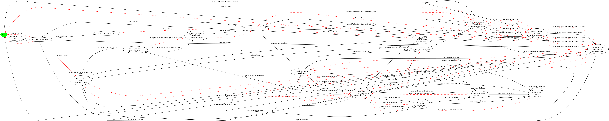
Generated test suite — 22 test case(s) total (62 real step(s); pair-graph cycle has 76 edge(s) total, 32 synthetic dropped at translation).
compose new email → enter email subject → enter email subject → enter email bodyenter receiver's email address → get alias email addresses of receiversend emailcreate an addressbook for a receiverenter alias email addresses of receivercreate an addressbook for a receivercompose new email → enter email body → enter receiver's email addressenter receiver's email address → send emailcompose new emailenter receiver's email address → get alias email addresses of receiver → send emailenter receiver's email address → get receiver's public key → encrypt mail with receiver's public keysend emailopen mailboxopen mailboxcompose new email → enter receiver's email address → enter receiver's email address → enter receiver's email address → enter email subject → enter email subjectenter receiver's email address → get receiver's public keyencrypt mail with receiver's public key → send emailcompose new emailenter receiver's email address → send emailcreate an addressbook for a receiver → enter the receiver's email addressenter alias email addresses of receivercompose new emailenter receiver's email address → enter email subject → enter receiver's email addressenter email subject → enter email body → enter email body → enter email subject → enter receiver's email addresssend emailopen mailbox → select emailcreate an addressbook for a receiverenter the receiver's email address → enter alias email addresses of receiveropen mailboxopen mailboxcreate an addressbook for a receiverSelected features: selected = {ad, e, s}
Repaired FTS: 8 states, 16 transitions (15 real / 1 __end__).
Pair graph (raw): 17 nodes (incl. INIT), 43 edges.
Pair graph (balanced): 17 nodes, 77 edges (34 synthetic __balance__N added).
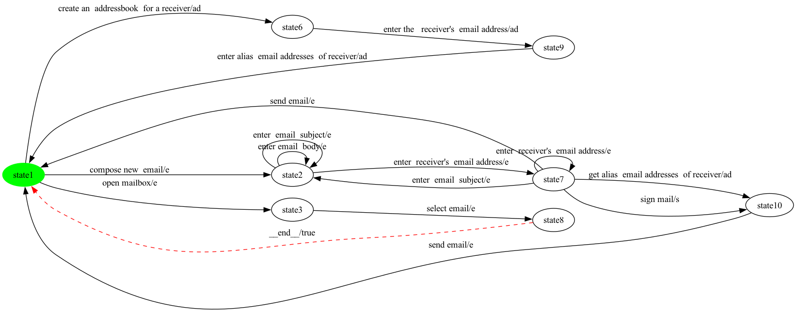
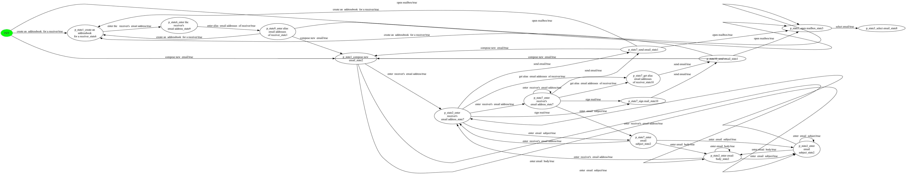
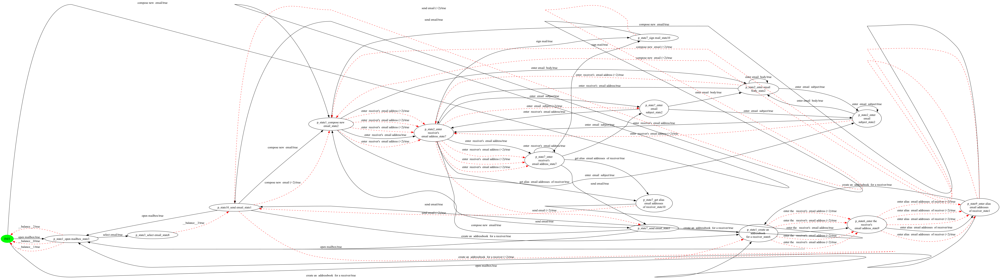
Generated test suite — 20 test case(s) total (59 real step(s); pair-graph cycle has 77 edge(s) total, 34 synthetic dropped at translation).
compose new email → enter email subject → enter email subject → enter email bodyenter receiver's email address → sign mail → send emailcreate an addressbook for a receiverenter alias email addresses of receivercreate an addressbook for a receiverenter alias email addresses of receivercompose new email → enter email body → enter receiver's email address → get alias email addresses of receiversend emailopen mailbox → select emailopen mailboxcompose new emailenter receiver's email address → send emailcompose new emailenter receiver's email address → sign mailsend emailcompose new emailenter receiver's email address → get alias email addresses of receiver → send emailenter receiver's email address → enter receiver's email address → enter receiver's email address → enter email subject → enter email subjectenter receiver's email address → send emailcreate an addressbook for a receivercompose new email → enter receiver's email addresscreate an addressbook for a receiverenter receiver's email address → enter email subject → enter receiver's email addressenter email subject → enter email body → enter email body → enter email subject → enter receiver's email addresssend emailopen mailboxopen mailboxcreate an addressbook for a receiver → enter the receiver's email address → enter alias email addresses of receiveropen mailboxSelected features: selected = {au, e, f, s}
Repaired FTS: 8 states, 18 transitions (16 real / 2 __end__).
Pair graph (raw): 19 nodes (incl. INIT), 51 edges.
Pair graph (balanced): 19 nodes, 110 edges (59 synthetic __balance__N added).

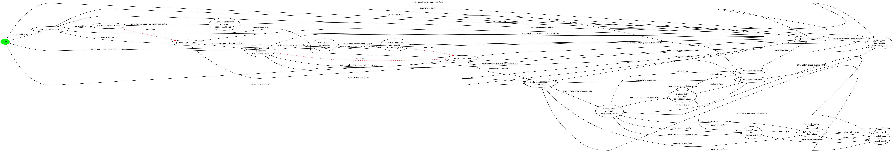
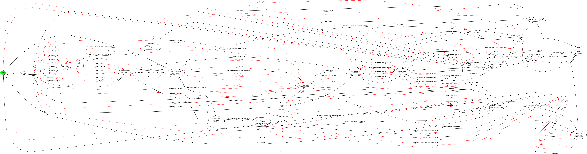
Generated test suite — 25 test case(s) total (69 real step(s); pair-graph cycle has 110 edge(s) total, 59 synthetic dropped at translation).
enter email autoresponse date intervalenter forward receiver's email address → send emailenter autoresponse email bodyselect email → enter forward receiver's email addresssend emailopen mailboxsend emailcompose new email → enter email body → enter email subject → enter email subjectenter receiver's email address → sign mail → send emailenter email autoresponse date intervalopen mailbox → select emailenter email autoresponse date intervalopen mailboxenter autoresponse email bodyenter email autoresponse date intervalcompose new email → enter email subject → enter receiver's email address → send emailenter autoresponse email bodysend emailcompose new email → enter receiver's email addresssend emailenter email autoresponse date interval → enter autoresponse email body → enter email autoresponse date intervalcompose new emailsend emailopen mailboxenter receiver's email address → enter email subject → enter email body → enter receiver's email addressenter email subject → enter email subject → enter email body → enter email bodyenter autoresponse email bodyenter autoresponse email body → enter email autoresponse date interval → enter autoresponse email bodycompose new emailenter receiver's email address → sign mailopen mailboxcompose new emailenter receiver's email address → enter receiver's email address → enter email subject → enter receiver's email address → enter receiver's email address → send emailSelected features: selected = {e, en}
Repaired FTS: 7 states, 13 transitions (12 real / 1 __end__).
Pair graph (raw): 14 nodes (incl. INIT), 32 edges.
Pair graph (balanced): 14 nodes, 49 edges (17 synthetic __balance__N added).

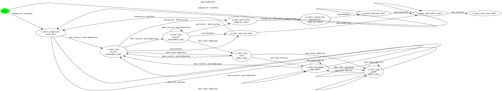
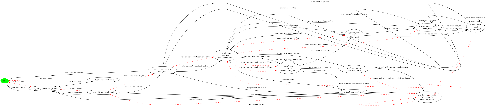
Generated test suite — 11 test case(s) total (40 real step(s); pair-graph cycle has 49 edge(s) total, 17 synthetic dropped at translation).
compose new email → enter email subject → enter email subject → enter email bodyenter receiver's email address → send emailcompose new email → enter email body → enter receiver's email addressenter receiver's email address → get receiver's public key → encrypt mail with receiver's public key → send emailopen mailbox → select emailopen mailboxcompose new emailenter receiver's email address → enter receiver's email address → enter receiver's email address → enter email subject → enter email subjectcompose new email → enter receiver's email address → get receiver's public keysend emailcompose new emailenter receiver's email address → enter email subject → enter receiver's email addressenter email subject → enter email body → enter email body → enter email subject → enter receiver's email address → send emailopen mailboxopen mailboxSelected features: selected = {au, e, f}
Repaired FTS: 8 states, 17 transitions (15 real / 2 __end__).
Pair graph (raw): 18 nodes (incl. INIT), 48 edges.
Pair graph (balanced): 18 nodes, 107 edges (59 synthetic __balance__N added).

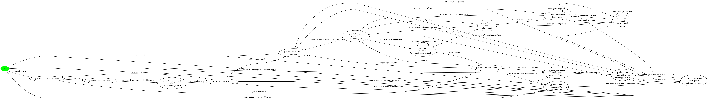
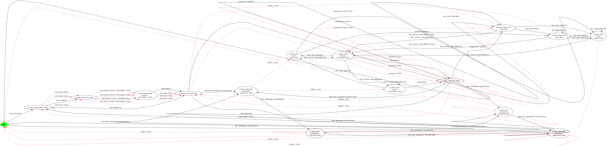
Generated test suite — 26 test case(s) total (67 real step(s); pair-graph cycle has 107 edge(s) total, 59 synthetic dropped at translation).
enter email autoresponse date intervalenter autoresponse email bodyopen mailboxcompose new email → enter email subject → enter email subject → enter email body → enter receiver's email addressenter receiver's email address → send emailenter email autoresponse date intervalopen mailbox → select emailcompose new email → enter email body → enter email body → enter email subject → enter receiver's email address → enter receiver's email address → enter receiver's email address → enter email subject → enter email subjectcompose new emailenter receiver's email address → send emailenter autoresponse email bodyenter email autoresponse date intervalopen mailboxenter forward receiver's email address → send emailopen mailboxsend emailcompose new emailsend emailcompose new email → enter receiver's email addresssend emailopen mailboxselect email → enter forward receiver's email addresssend emailenter autoresponse email body → enter email autoresponse date intervalsend emailenter email autoresponse date intervalcompose new emailenter receiver's email address → enter email subject → enter receiver's email addressenter email subject → enter email bodyopen mailboxenter autoresponse email bodyenter email autoresponse date interval → enter autoresponse email body → enter email autoresponse date intervalenter autoresponse email bodyenter email autoresponse date interval → enter autoresponse email bodySelected features: selected = {ad, e, f, s}
Repaired FTS: 8 states, 17 transitions (16 real / 1 __end__).
Pair graph (raw): 18 nodes (incl. INIT), 45 edges.
Pair graph (balanced): 18 nodes, 81 edges (36 synthetic __balance__N added).

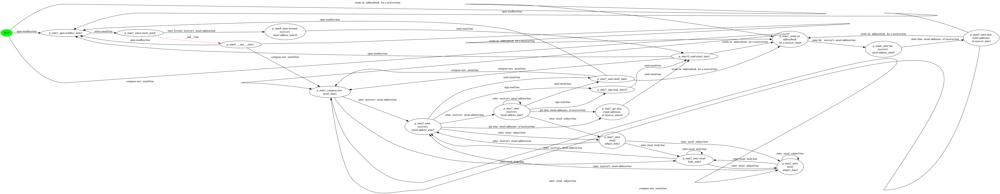
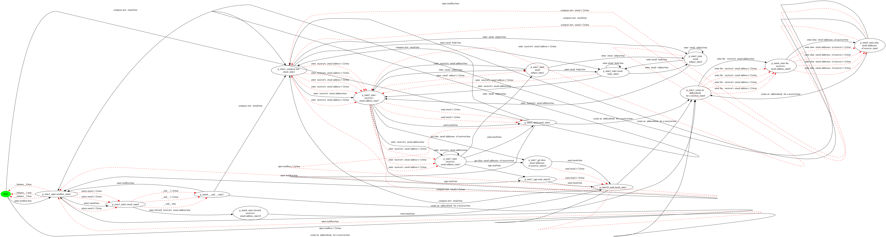
Generated test suite — 20 test case(s) total (61 real step(s); pair-graph cycle has 81 edge(s) total, 36 synthetic dropped at translation).
compose new email → enter email subject → enter email subject → enter email bodyenter receiver's email address → sign mail → send emailcreate an addressbook for a receiverenter alias email addresses of receivercreate an addressbook for a receiverenter alias email addresses of receivercompose new email → enter email body → enter receiver's email address → get alias email addresses of receiversend emailopen mailboxopen mailbox → select emailcompose new emailenter receiver's email address → send emailcompose new emailenter receiver's email address → sign mailcreate an addressbook for a receiverenter receiver's email address → get alias email addresses of receiver → send emailcompose new emailenter receiver's email address → enter receiver's email address → enter receiver's email address → enter email subject → enter email subjectenter receiver's email address → send emailcreate an addressbook for a receivercompose new email → enter receiver's email addressselect email → enter forward receiver's email address → send emailenter receiver's email address → enter email subject → enter receiver's email addressenter email subject → enter email body → enter email body → enter email subject → enter receiver's email addresssend emailopen mailboxopen mailboxcreate an addressbook for a receiver → enter the receiver's email address → enter alias email addresses of receiveropen mailboxSelected features: selected = {ad, au, e, en}
Repaired FTS: 11 states, 22 transitions (20 real / 2 __end__).
Pair graph (raw): 23 nodes (incl. INIT), 65 edges.
Pair graph (balanced): 23 nodes, 157 edges (92 synthetic __balance__N added).
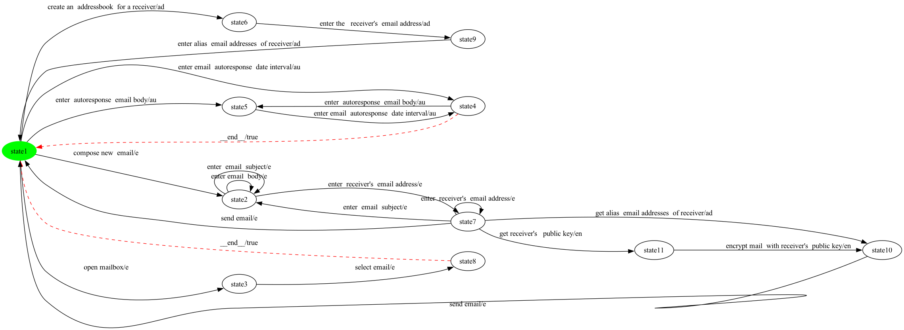

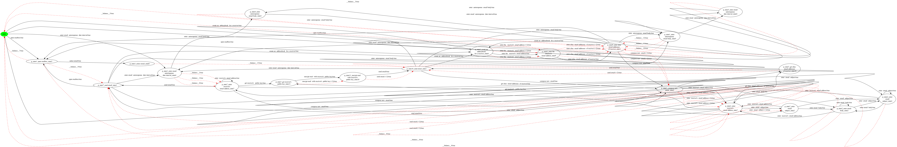
Generated test suite — 39 test case(s) total (96 real step(s); pair-graph cycle has 157 edge(s) total, 92 synthetic dropped at translation).
enter email autoresponse date intervalopen mailbox → select emailopen mailboxcreate an addressbook for a receivercompose new email → enter email body → enter email subject → enter email subjectenter receiver's email address → get alias email addresses of receiversend emailenter autoresponse email bodyenter email autoresponse date intervalopen mailboxenter autoresponse email bodyenter email autoresponse date intervalenter alias email addresses of receivercompose new email → enter email subject → enter receiver's email addresssend emailcreate an addressbook for a receiverenter receiver's email address → send emailenter autoresponse email bodycreate an addressbook for a receiversend emailcompose new emailsend emailcreate an addressbook for a receiverenter alias email addresses of receiverenter email autoresponse date intervalenter alias email addresses of receiveropen mailboxcompose new emailsend emailenter email autoresponse date intervalsend emailopen mailboxenter receiver's email address → enter email subject → enter email body → enter receiver's email addressenter email subject → enter email subject → enter email body → enter email bodyenter autoresponse email bodycompose new email → enter receiver's email addressenter receiver's email address → get receiver's public key → encrypt mail with receiver's public keysend emailopen mailboxcompose new emailenter receiver's email address → enter receiver's email address → send emailopen mailboxcreate an addressbook for a receiver → enter the receiver's email address → enter alias email addresses of receivercreate an addressbook for a receiverenter alias email addresses of receiverenter autoresponse email body → enter email autoresponse date intervalcompose new emailenter receiver's email address → get alias email addresses of receiver → send emailcompose new emailenter receiver's email address → enter receiver's email address → enter email subject → enter receiver's email address → get receiver's public keyencrypt mail with receiver's public key → send emailenter email autoresponse date interval → enter autoresponse email body → enter email autoresponse date intervalenter autoresponse email bodyenter email autoresponse date interval → enter autoresponse email bodySelected features: selected = {au, e, en}
Repaired FTS: 9 states, 18 transitions (16 real / 2 __end__).
Pair graph (raw): 19 nodes (incl. INIT), 50 edges.
Pair graph (balanced): 19 nodes, 109 edges (59 synthetic __balance__N added).
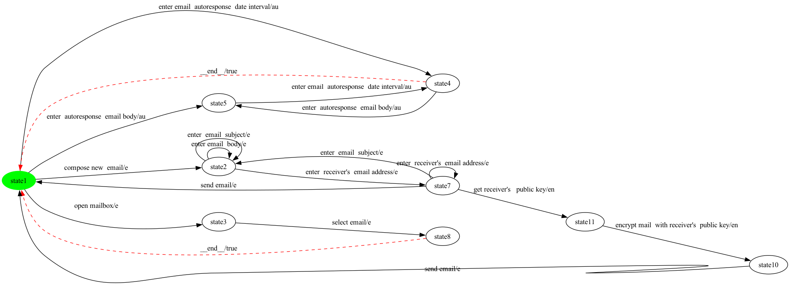
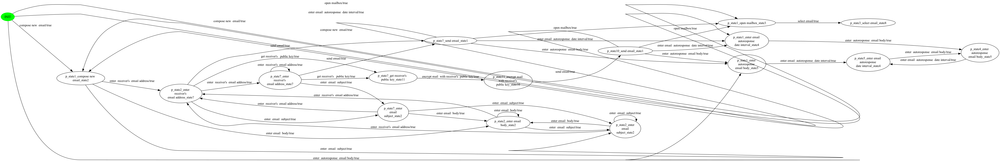
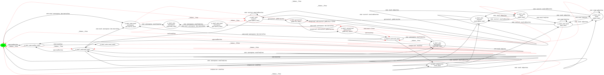
Generated test suite — 30 test case(s) total (73 real step(s); pair-graph cycle has 109 edge(s) total, 59 synthetic dropped at translation).
enter email autoresponse date intervalopen mailboxenter email autoresponse date intervalopen mailbox → select emailenter email autoresponse date intervalcompose new email → enter email body → enter email subject → enter email subjectenter receiver's email address → send emailenter autoresponse email bodycompose new email → enter email subject → enter receiver's email addresssend emailcompose new emailsend emailenter email autoresponse date intervalsend emailopen mailboxenter autoresponse email bodycompose new emailenter receiver's email address → enter email subject → enter email body → enter receiver's email addressenter email subject → enter email subject → enter email body → enter email bodyenter autoresponse email body → enter email autoresponse date intervalcompose new email → enter receiver's email addressenter receiver's email address → get receiver's public key → encrypt mail with receiver's public keysend emailenter autoresponse email bodyenter receiver's email address → enter receiver's email address → send emailcompose new emailenter receiver's email address → enter receiver's email address → enter email subject → enter receiver's email addressencrypt mail with receiver's public key → send emailopen mailboxcompose new emailsend emailcompose new emailenter receiver's email address → get receiver's public keysend emailenter email autoresponse date interval → enter autoresponse email body → enter email autoresponse date intervalenter autoresponse email bodyenter email autoresponse date interval → enter autoresponse email bodyopen mailboxSelected features: selected = {e, f}
Repaired FTS: 6 states, 12 transitions (11 real / 1 __end__).
Pair graph (raw): 13 nodes (incl. INIT), 30 edges.
Pair graph (balanced): 13 nodes, 47 edges (17 synthetic __balance__N added).
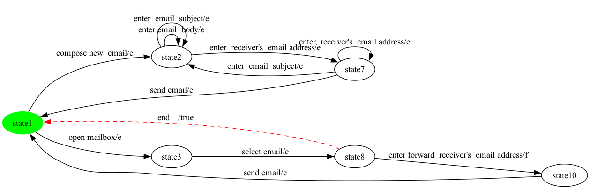
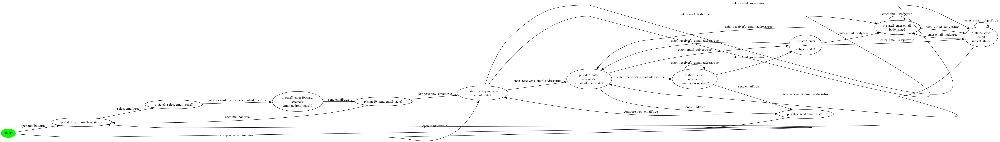
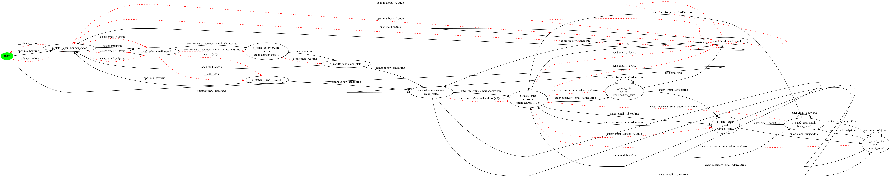
Generated test suite — 10 test case(s) total (37 real step(s); pair-graph cycle has 47 edge(s) total, 17 synthetic dropped at translation).
compose new email → enter email subject → enter email subject → enter email bodyenter receiver's email address → send emailcompose new email → enter email body → enter receiver's email address → enter receiver's email address → enter receiver's email address → enter email subject → enter email subjectenter receiver's email address → send emailopen mailboxopen mailbox → select emailcompose new email → enter receiver's email addressselect email → enter forward receiver's email address → send emailopen mailboxsend emailcompose new emailenter receiver's email address → enter email subject → enter receiver's email addressenter email subject → enter email body → enter email body → enter email subject → enter receiver's email addressopen mailboxSelected features: selected = {ad, e, en, s}
Repaired FTS: 9 states, 18 transitions (17 real / 1 __end__).
Pair graph (raw): 19 nodes (incl. INIT), 47 edges.
Pair graph (balanced): 19 nodes, 88 edges (41 synthetic __balance__N added).

Generated test suite — 25 test case(s) total (68 real step(s); pair-graph cycle has 88 edge(s) total, 41 synthetic dropped at translation).
compose new email → enter email subject → enter email subject → enter email bodyenter receiver's email address → sign mail → send emailenter alias email addresses of receivercreate an addressbook for a receivercompose new email → enter email body → enter receiver's email address → get alias email addresses of receiversend emailcreate an addressbook for a receiverenter receiver's email address → send emailcompose new emailenter receiver's email address → sign mailenter alias email addresses of receivercompose new emailenter receiver's email address → get alias email addresses of receiver → send emailopen mailbox → select emailopen mailboxcompose new emailenter receiver's email address → enter receiver's email address → get receiver's public key → encrypt mail with receiver's public keysend emailcompose new emailenter receiver's email address → enter receiver's email address → enter email subject → enter email subjectenter receiver's email address → get receiver's public keyencrypt mail with receiver's public key → send emailcompose new email → enter receiver's email address → send emailcreate an addressbook for a receiverenter the receiver's email address → enter alias email addresses of receiverenter receiver's email address → enter email subject → enter receiver's email addressenter email subject → enter email body → enter email body → enter email subject → enter receiver's email addresssend emailopen mailboxcreate an addressbook for a receiver → enter the receiver's email addressenter alias email addresses of receiveropen mailboxopen mailboxcreate an addressbook for a receiverSelected features: selected = {ad, au, e, s}
Repaired FTS: 10 states, 21 transitions (19 real / 2 __end__).
Pair graph (raw): 22 nodes (incl. INIT), 64 edges.
Pair graph (balanced): 22 nodes, 157 edges (93 synthetic __balance__N added).

Generated test suite — 38 test case(s) total (94 real step(s); pair-graph cycle has 157 edge(s) total, 93 synthetic dropped at translation).
enter email autoresponse date intervalopen mailbox → select emailopen mailboxcreate an addressbook for a receivercompose new email → enter email body → enter email subject → enter email subjectenter receiver's email address → sign mail → send emailenter autoresponse email bodyenter email autoresponse date intervalopen mailboxenter email autoresponse date intervalenter alias email addresses of receivercompose new email → enter email subject → enter receiver's email addresssend emailcreate an addressbook for a receiversend emailopen mailboxenter autoresponse email body → enter email autoresponse date intervalcreate an addressbook for a receiverenter receiver's email address → get alias email addresses of receiversend emailcompose new emailenter receiver's email address → send emailenter autoresponse email bodyenter alias email addresses of receiverenter email autoresponse date intervalsend emailcompose new emailsend emailcreate an addressbook for a receiverenter alias email addresses of receiveropen mailboxcompose new emailsend emailenter email autoresponse date intervalsend emailopen mailboxcompose new email → enter receiver's email address → enter email subject → enter email body → enter receiver's email addressenter email subject → enter email subject → enter email body → enter email bodyenter autoresponse email bodycompose new emailenter receiver's email address → sign mailcompose new emailenter receiver's email address → enter receiver's email address → send emailopen mailboxcreate an addressbook for a receiverenter the receiver's email address → enter alias email addresses of receivercreate an addressbook for a receiver → enter the receiver's email addressenter alias email addresses of receiverenter autoresponse email bodyenter receiver's email address → enter email subject → enter receiver's email address → enter receiver's email address → get alias email addresses of receiver → send emailenter email autoresponse date interval → enter autoresponse email body → enter email autoresponse date intervalenter autoresponse email bodyenter email autoresponse date interval → enter autoresponse email bodySelected features: selected = {au, e, s}
Repaired FTS: 8 states, 17 transitions (15 real / 2 __end__).
Pair graph (raw): 18 nodes (incl. INIT), 49 edges.
Pair graph (balanced): 18 nodes, 110 edges (61 synthetic __balance__N added).
Generated test suite — 27 test case(s) total (69 real step(s); pair-graph cycle has 110 edge(s) total, 61 synthetic dropped at translation).
enter email autoresponse date intervalopen mailboxenter email autoresponse date intervalopen mailbox → select emailenter email autoresponse date intervalcompose new email → enter email body → enter email subject → enter email subjectsign mail → send emailenter autoresponse email bodycompose new email → enter email subject → enter receiver's email addresssend emailopen mailboxenter autoresponse email bodyenter receiver's email address → sign mailsend emailcompose new emailsend emailenter email autoresponse date intervalcompose new email → enter receiver's email address → send emailenter autoresponse email bodycompose new emailsend emailcompose new emailsend emailenter email autoresponse date interval → enter autoresponse email body → enter email autoresponse date intervalsend emailopen mailboxenter receiver's email address → enter email subject → enter email body → enter receiver's email addressenter email subject → enter email subject → enter email body → enter email bodyenter autoresponse email bodyenter autoresponse email body → enter email autoresponse date interval → enter autoresponse email bodycompose new emailenter receiver's email address → sign mailopen mailboxcompose new emailenter receiver's email address → enter receiver's email address → enter email subject → enter receiver's email address → enter receiver's email address → send emailTotal products: 23.